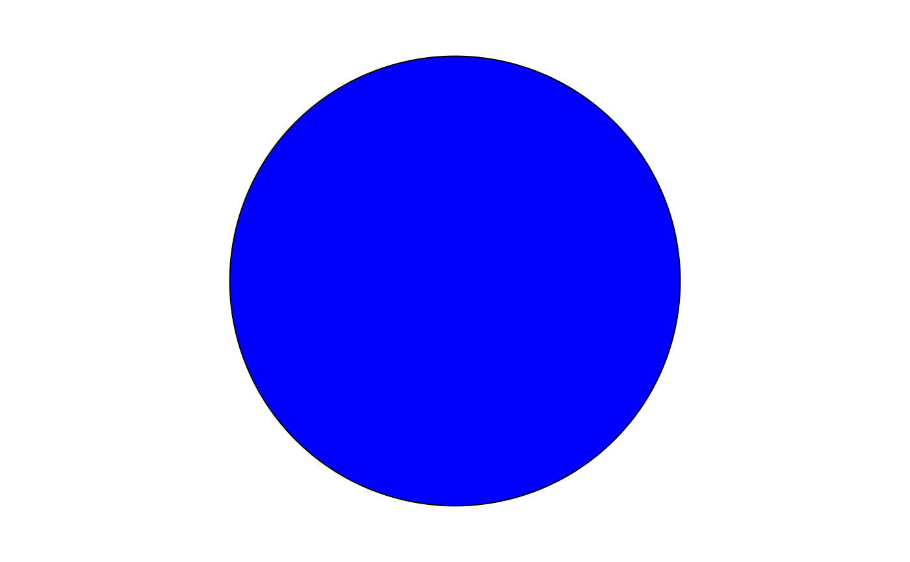

Use to create grob that is a piece of the pie chart that is always a circle. Maintain aspect ratio.
Usage
pieGrob(
x = 0.5,
y = 0.5,
r0 = 0,
r1 = 0.3,
theta0 = 0,
theta1 = pi/2,
n = 360,
position_unit = "npc",
size_unit = "snpc",
gp = gpar(),
vp = NULL,
name = NULL
)Arguments
- x, y
The x and y coordinates for this grob, in
position_unit.- r0, r1
The inner and outer arc radius, in
size_unit.- theta0, theta1
The start and end angle of the piece of pie, in radius.
- n
The number of points to sample.
- position_unit
The grid unit to use for where to put the grob.
- size_unit
The grid unit to use for the size of the grob.
- gp
An object from
grid::gpar().- vp
A
grid::viewport()object.- name
A character identifier.
Value
A grid::polygonGrob() object that represents a piece of the pie chart.
Details
A new grob that is piece of a pie chart. It is worth mention that ggforce package implement a shape grob. However, to my understanding, the aspect ratio of that grob will change, resulting a ellipse like pie chart.
gridExtra::ngonGrob() implements a polygon grob that maintain aspect ratio.
It uses the grid::polygonGrob() internally and does some unit conversion.
Inspired by the gridExtra approach, we separately specify the
position (npc-based) and size (snpc-based) parameters.
In the end, the grob will be located at the desired location
with its radius proportional to the smaller of the width and height
of the current viewport. Everything is normalized so (0-1) can be used.
If the piece of pie is greater than 2*pi, it will draw a circle instrand.
Examples
# A simple slice of the pie chart that is red.
pie1 = pieGrob(
x = 0.3, y = 0.3,
r0 = 0.0, r1 = 0.5,
gp = grid::gpar(fill = "red")
)
grid::grid.draw(pie1)
# How about a part of a donut?
donut = pieGrob(
x = 0.7, y = 0.7,
r0 = 0.1, r1 = 0.2,
theta0 = pi / 2, theta1 = 3 * pi / 2,
gp = grid::gpar(col = "green", lty = 2)
)
grid::grid.newpage()
grid::grid.draw(donut)
# grob parameters are vectorized
many_pieces = pieGrob(
x = c(0.3, 0.7), y = c(0.3, 0.7),
r0 = c(0, 0.1), r1 = c(0.2, 0.4),
theta0 = c(1, 2), theta1 = c(2, 3),
gp = grid::gpar(
fill = c("orange", "blue"),
lty = c(2, 3),
col = c("grey20", "#FFFFFF")
)
)
grid::grid.newpage()
grid::grid.draw(many_pieces)
# If is is a full circle, draw circle...
big_pie = pieGrob(
x = 0.5, y = 0.5,
r0 = 0.0, r1 = 0.4,
theta0 = 0, theta1 = 2 * pi,
gp = grid::gpar(fill = "blue")
)
grid::grid.newpage()
grid::grid.draw(big_pie)
